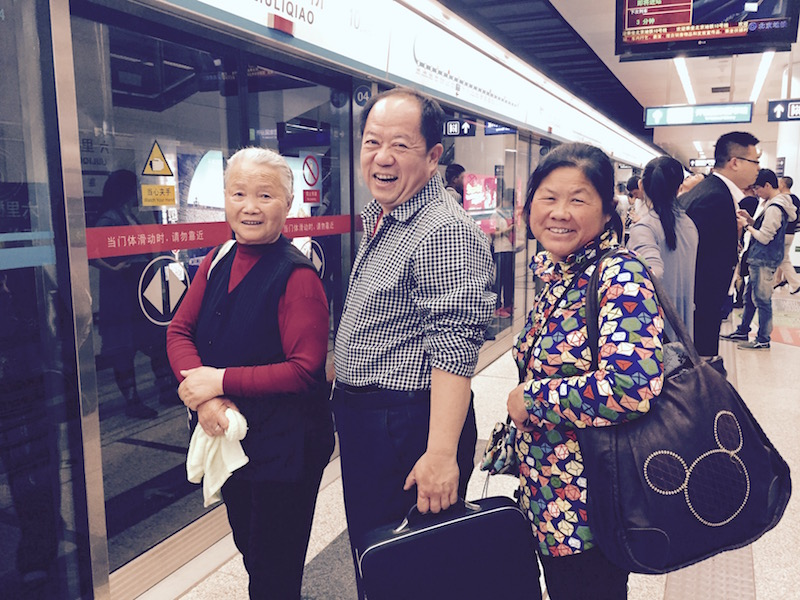

引子
去年夏天把父母和奶奶接北京玩了几天，担心奶奶体力问题，还备用了轮椅。结果几天下来，老人家依然劲头十足，我却累蔫儿了。
好吧，以上不是重点，重点是游玩期间我做了个视频，放在了网上（可以直接跳到文章底部观看）。令我惊讶的是，半年多过去了，突然有歪果仁来了封邮件，问视频是怎么做的：How did you accomplish it?Amazing!。哎，这个没见过世面的歪果仁，Vimeo上的视频一个比一个精彩，如果排行的话，我只能垫底。不过这位歪果仁兄既然诚心诚意地发问，我也就很负责任地回复了：iPhone6 + iMovie + selfie stick。对，很简洁，很任性，很清真，我大概能猜到歪果仁看到后的表情：(╯‵□′)╯︵┻━┻。
视频
世界那么大 TA们想看看
注：微信下视频加载不出来，请移步浏览器
工具
其实不只歪果仁，有些国内的朋友也问过我几次同样的问题，那么有必要罗列下当初用到的工具，仅供参考。
硬件
- iPhone 6 64G：应该是刚买了没多久，就拿来录像了，效果挺好的。庆幸当初选择的是64G，否则后面内存就捉襟见肘了。
- iPad Air：主要用来编辑视频，使用自带的iMovie
- Macbook Pro：用来上传视频，好吧，有点打酱油的一个硬件
- 自拍杆（带遥控）：淘宝了一个，链接点这里100元左右就能买个带遥控功能的，还有三脚架功能，好神奇。不过用过之后随即就打入冷宫了，后来送给了我哥。
软件
- iMovie：苹果操作系统自带的视频编辑软件，功能足够，如果不太熟悉操作，可以移步这里先了解下。
- Vimeo：一个高清视频社区网站，我试过上传优酷，清晰度不好，又尝试秒拍，结果时长有限制。最后只好使用歪果仁的服务了，唯一担心的就是流畅性，试了试，还不错。
拍摄地点
- 天安门广场
- 故宫
- 颐和园
- 圆明园
- 鸟巢&水立方
- 地铁&住所&路上
最后再说一句
工具固然要有，但想法和执行更重要。That’s all!